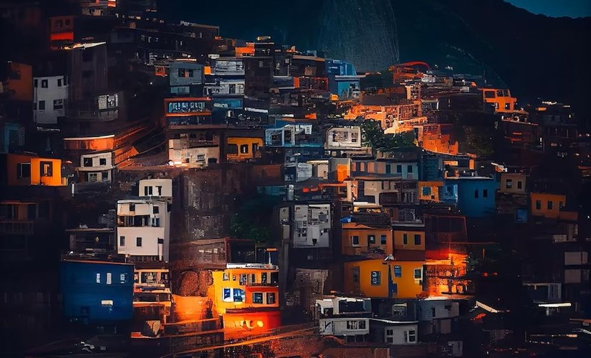

Descoperă Cinque Terre - O incursiune în peisajele pitorești ale coastei italiene
Cinque Terre este o regiune unică din Italia, compusă din cinci sate pitorești și peisaje spectaculoase:
-

Manarola - Colorată și fermecătoare
Un sat cu case colorate și străduțe înguste, oferind vederi uimitoare asupra mării.
-

Riomaggiore - Arhitectură tradițională
Un sat cu case în culori vii, așezat pe coastă și cunoscut pentru atmosfera sa autentică.
-

Corniglia - Vederi panoramice
Situat pe un deal, acest sat oferă vederi uimitoare asupra regiunii și a mării.
-

Vernazza - Port pitoresc
Un sat cu un port mic și străzi pietruite, oferind atmosferă autentică de pescuit.
-

Monterosso al Mare - Plaje frumoase
Un sat cu plaje uimitoare și atmosferă relaxantă, potrivit pentru plajă și odihnă.
Concluzii
Cinque Terre oferă o experiență de neuitat, cu sate pitorești, peisaje spectaculoase și atmosferă autentică.